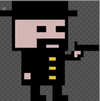
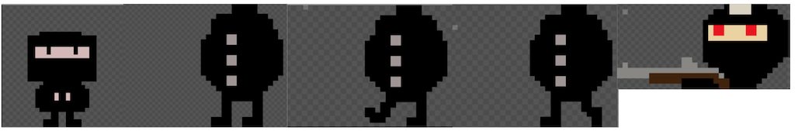
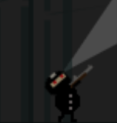
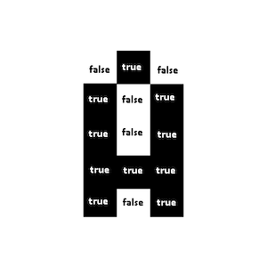
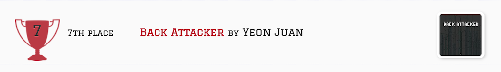

Js13kGames 2019 참가 후기
Js13kGames?
Js13kGames는 2012년부터 매년 1회씩 개최된 HTML5 Game 개발자를 위한 대회입니다. 대회의 조건은 파일 크기를 13kb 이내로 제출해야 한다는 것과, 브라우저 상에서 동작해야 한다는 조건이 있습니다.
대회가 시작하면 게임 대회의 테마가 공개됩니다. 테마는 키워드로 주어지게 되는데 자유롭게 해석하여 게임을 만들고 제출하면 됩니다.
제출 기한은 테마 공개 이후 한 달 이내로 index.html을 필수로 포함한 압축 파일을 제출하면 됩니다. 이번에 공개된 Js13kGames 의 테마는 back 이었습니다.
이번 게임대회에 참가하게 된 이유는 재밌어 보였고 많이 사용해보지 않은 Canvas API에 대한 경험과 게임 프로그래밍에 대한 경험을 얻을 수 있겠다고 생각했습니다.
아이디어
초기에 기획한 아이디어는 "좀비들을 사냥하다가 갑자기 뒤에서 좀비들이 튀어나오는 FPS 게임"이었습니다.
하지만 게임을 만들어본 경험도 적은 상황에서 FPS 게임을 만들기에는 능력이 부족하다고 생각해서 급히 아이디어를 수정했습니다.
만들기 쉬운 2d 플랫포머 형태의 게임을 생각하였고
back => 뒤를 공격하기 => 암살, 닌자와 같은 생각의 흐름으로 닌자를 주제로 게임을 만들기로 하였습니다.
이미지
아이디어 정리 후, 주인공 캐릭터와 몬스터의 이미지를 만들기로 했습니다. 포토샵과 같은 툴을 다룰 줄 몰랐기 때문에, 쉽게 스프라이트를 만들 수 있는 piskel이라는 사이트를 이용했습니다.

처음으로 그린 몬스터 이미지입니다. 이미지를 만든 후 개발하며 생각해보니 한 방향으로 공격하게 하는 것보다 회전을 하면서 공격하면 더 재밌고 난이도도 높아질 것 같다는 생각에 각진 디자인을 버리고, 새로 디자인하였습니다.

맨 왼쪽: 주인공/ 이 후: 몬스터
아래가 최종 결과물로, 몬스터는 걷는 모습을 표현하기 위해 애니메이션이 되도록 만들었으며, 머리를 회전시키기 위해 몸통 이미지와 머리 이미지를 분리시켰습니다.

사운드
효과음게임에 소리가 들어가야 더 퀄리티가 있을 것 같다고 생각하였습니다. 먼저 게임에 들어갈 효과음을 opengameart 라는 사이트에서 찾았습니다. 이 사이트에는 효과음 이외에도 인디게임 개발자 들을 위한 여러 게임 리소스를 제공하고 있습니다. 사이트 메뉴에서 Browser > sound effects로 들어가면 다양한 효과음을 찾을 수 있습니다.
적당한 효과음을 찾았지만 13kb 이내에 효과음을 그대로 게임에 넣기에는 파일 크기가 너무 컸습니다. 때문에 사이트에서 간편하게 음악파일을 줄일 수 있는 audio-compressor와 같은 사이트를 이용해서 음악 파일을 줄였습니다.
배경음악배경음 소스는 많이 찾을 수 있었지만 배경음은 아무리 줄여도 파일크기가 너무 컸습니다. 때문에 다른 해결책을 찾아야 했습니다.
TinyMusic 이라는 라이브러리를 이용하면 WebAudio를 이용하여 소리를 만들어 낼 수 있습니다. 이 라이브러리는 문자열 배열 형태의 음악 코드를 web audio로 재생시켜 줍니다.
게임 배경음악 악보아무 음악이나 사용하면 저작권 문제도 있을 것 같아 음악을 전공하는 친구에게 부탁하여 곡을 받고, 이를 TinyMusic으로 재생시키기 위해 아래와 같이 변환했습니다.
import TinyMusic from "./TinyMusic";
/*
A~F[숫자] 는 음.
w, h ,e 는 음의 길이.
*/
const NOTES = [
'Gb4 w', 'B3 h', 'Db4 h', 'D4 e', 'E4 e', 'D4 e', 'C4 h', 'B3 h',
'Gb4 w', 'B3 h', 'Db4 h', 'D4 e', 'E4 e', 'D4 e', 'F4 h', 'G4 h',
'Gb4 w', 'B3 h', 'Db4 h', 'D4 e', 'E4 e', 'D4 e','C4 h', 'B3 h',
'Gb4 w', 'G4 h', 'F4 h', 'E4 w', 'D4 h', 'E4 h',
];
const audioContext = new AudioContext();
const tempo = 240; // 템포
const bgMusic = new TinyMusic.Sequence(audioContext, tempo, BG_MUSIC_NOTES);
bgMusic.loop = true; // 반복 재생 true
bgMusic.play(); // 재생 시작
폰트
처음에는 웹 브라우저의 기본 폰트를 사용하려 했으나, 디자인과도 맞지 않고. 모든 사용자에게 동일한 폰트를 보여주는 것이 좋겠다고 생각했습니다.
하지만 폰트 파일은 크기가 크기 때문에 이 역시 Pixel Font라는 라이브러리를 이용해 해결했습니다.
이 라이브러리는 내부적으로 모든 알파벳의 모양을 boolean의 2차원 배열로 가지고 있고, 이를 Canvas에 사각형으로 그리도록 도와줍니다.
var A = [
[false, true, false],
[true, false, true],
[true, false, true],
[true, true, true],
[true, false, true]
];
결과

상당히 잘 만든 게임들이 많이 보여서 아마 순위권에는 들지 못할 것 같다고 생각했는데 운이 좋게 7등을 하게 되었습니다!! 이후 Github 블로그에도 소개되는 경험을 하게 되었습니다.
게임에 대해 이곳저곳에 평가를 구했습니다. 좋은 평가로는 참신한 아이디어가 있었으며, 발전을 주는 피드백으로는 1 종류밖에 없는 몬스터 타입 , 잘못 설계된 듯한 스테이지, 반복적인 게임 배경 등이 있었습니다.
느낀 점
코드 퀄리티
일단 동작부터 시키고 나중에 리팩토링 해야지 라고 생각했습니다. 퇴근 후 개발을 하다 보니 피곤함 때문에 리팩토링을 미루기도 했고, 빨리 완성부터 시키자 라는 마음이 컸습니다. 이런 마음으로 코드를 짜다 보니 퀄리티가 많이 떨어지는 코드들이 나오게 되었습니다 :).
대표적으로 퀄리티를 떨어뜨리는 요소는, '매직넘버'와 '잘못된 구조'입니다.
매직 넘버
Canvas에 그려지는 요소를 눈대중으로 맞추다 보니 아래와 같은 코드가 많습니다.
this.ox = x + width / 2 + Math.cos(rad) * 21;
this.oy = y + 7 + Math.sin(rad) * 21;
// ...
this.head.offsetY = 8;
this.head.offsetX = 5;제가 짰는데도 나중에 보니 이게 무슨 숫자인지 헷갈리고 버그가 있어도 찾아 해결하는데 시간이 오래 걸렸습니다.
또한 여러 곳에 동일하게 쓰인 숫자를 바꾸려고 할 때 일부를 빼먹게 되어 문제가 생기는 경우도 빈번했습니다.
조금 귀찮더라도 미리미리 상수로 잘 정의했다면 더 수월했을 것 같아 아쉽습니다.
잘못된 구조
처음부터 로직의 재사용성을 최대한 고려하고 클래스 상속을 잘 설계했으면, 더 작은 파일 크기로 완성했을 수 있을 것 같습니다. 현재는 중복되는 로직이 이곳저곳에 존재합니다. 또한 어떤 객체는 각도를 radian으로 사용하고, 다른 객체는 degree로 사용하기도 하는 등 일관성이 없습니다. 이런 부분을 미리미리 잘 처리해 두었다면 더 적은 파일 크기로 완성할 수 있었을 것 같고 그럼 더 재밌는 스테이지(보스전?)를 넣을 수 있었을 것 같아 아쉽습니다.
끝
마지막으로 게임이 궁금하신 분들은 아래 링크에서 플레이할 수 있으며, 모바일은 지원하지 않고 Chrome 과 FireFox에서만 동작합니다.